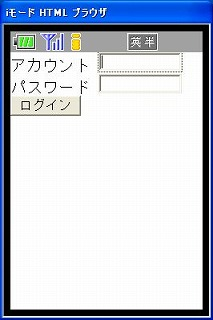
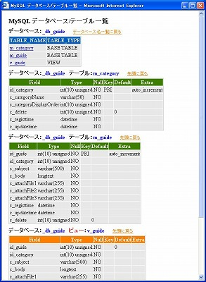
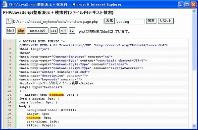

MyHome Portal 変更履歴
以下は、バージョン1.25以前の履歴です。 1.26以降の履歴に戻る
MyHome Portal Ver.1.25 (2008/12/02)
- 変更点
- トップページのインターネット検索ボタンに「Yahoo!百科事典」を追加。
- カレンダースケジュール入力画面の日付のポップアップ入力で使用しているYUIのJavaScriptとCSSを、Yahooサイトでなくサーバーローカルからロードする方式に変更。
- 変更モジュール
・photo/index.php
・calendar/_add_input_header.php
・scripts/YahhoCal.js - 追加モジュール
・scripts/yui 以下一式 (YUI Library: version 2.6.0から一部を抜粋)
MyHome Portal Ver.1.24 (2008/11/27)
- 変更点
- アルバムで、画像データをimagecopyresampled()でリサイズしていたが、非常に時間がかかるのでリサイズ処理を行わない方法に変更。
- 変更モジュール
・photo/index.php - 追加モジュール
・photo/img-view.php
MyHome Portal Ver.1.23 (2008/11/24)
- 変更点
- 「ツール」に「HTML テーブル CSSスタイル シミュレーション」を追加。
使いそうなテーブルレイアウト複数パターンのbackground-colorやborder-widthなどを一括変更してレイアウトイメージを確認できます。
JavaScript＋jQueryを使っています。 - ※ 拡張子をhtmlにして、ホームページのツールにも置きました。
- 変更モジュール
・tools/index.php
・scripts/jquery.js (photo/scriptsから移動。バージョンを1.2.6に。)
・photo/index.php (jquery.jsのディレクトリ移動に伴う修正。) - 追加モジュール
・tools/table-layout.php
MyHome Portal Ver.1.22 (2008/11/19)
- 変更点
- 入力フォームの件名未入力チェックをJavaScriptで行い警告ダイアログを表示するようにしました。
(修正コンテンツ：カレンダー、メモ、ID管理、利用ガイド) - 変更モジュール
・calendar/input.php
・memo/input.php
・id-manager/input.php
・guide/input.php
MyHome Portal Ver.1.21 (2008/11/15)
- 変更点
- 一覧形式ページでurl引数にdebug=yを付けるとSQL文を表示するようにしているが、そのSQLを少しだけ整形して表示するようにした。
- 合わせて、このデバッグ用SQL表示のロジック変更をした。
【修正前】
include-common-mp-list.php内の、mp_list_sql_add_create、mp_list_sql_createで、$_SESSION['debug'] == "y"の時にerror_msgでSQLを表示していた。
【修正後】
error_msgの代わりに、整形表示用sql_printを作成。
include-common-all.php内に、my_mysql_query_debug_printという関数を新たに作成し、mp_list_view、mp_list_editで、my_mysql_queryの代わりにこれをコールするようにした。
定義ファイルの_DEBUG_ERROR_MSGが"YES"の時のみ、この機能が有効なように仕様変更。
function my_mysql_query_debug_print($sql, $err_msg="", $con_link=NULL, $html=False) { if (_DEBUG_ERROR_MSG == "YES" and $_SESSION['debug'] == "y") { sql_print ($sql); } return my_mysql_query($sql, $err_msg, $con_link, $html); } - デバッグモードをOFFにする場合は、url引数にdebug=nを付けてください。
- 変更モジュール
・__common__/include-common-all.php, include-common-mp-list.php
・index/top.php(debugプリント機能を削除)
MyHome Portal Ver.1.20 (2008/11/13)
- 変更点
- 「ID管理」表示ページのID、パスワード表示欄のレイアウトを少しだけ修正。
項目名と値表示ボックスの上下位置がアンバランスだったのを補正。
Google Chromeでは改行されて2段表示になってしまっていた問題を解消。 - ReadMe-original.txt.phpに、「初期アカウント登録」と「サンプルデータ削除方法」を追加。
【初期アカウント登録方法】 サンプルデータを利用して一括修正する方法が簡単です。 1.サンプルデータの管理者アカウント「tarou」でログインします。 2.右上メニュー「ユーザ一覧」を開き、「一括修正/追加/削除」を開きます。 3.サンプルデータのアカウント、ハンドル、パスワードを利用環境のユーザに合わせて修正します。 権限に「admin」と入れるとシステム管理者になります。 【サンプルデータ削除方法】 サンプルデータを削除する方法です。 ＜カレンダからサンプルのスケジュールデータを削除＞ mysql -u myhome -ppass123 use _db_calendar; truncate table m_schedule; exit;
- 変更モジュール
・id-manager/list-my-template.php
・style/original/id-manager.css
MyHome Portal Ver.1.19 (2008/11/06)
- 変更点
- 携帯電話(mobile端末)からのカレンダースケジュール表示機能を作成しました。
本人のスケジュール表示機能だけです。本文のHTML、アイコンは省いています。カテゴリアイコンと色は件名に反映させています。png画像の場合、正しく表示されない可能性があります。
開発には、携帯用アプリの開発ツールキットHAWHAWを利用しています。
http://www.d-meister.co.jp/HAWHAW/
テストはiモードHTMLシミュレータIIでのみ行っています。実機でのテストは行っていません。(iモードHTMLシミュレータIIではlocalhostは使えないようです。IPアドレスで指定してください。)
http://www.nttdocomo.co.jp/service/imode/make/content/download/index.html
実用に耐えるかどうかは保障できません。 あくまで、携帯端末向けWebサイトのトライアルとして作成しました。
認証は、ログイン画面を表示する方式とurlで直接アカウントとパスワードを指定する方式をサポートしています。
http://localhost/_mobile/calendar/
http://localhost/_mobile/calendar/?ac=tarou&pw=demo - 携帯端末の場合、Cookieが使えないなどセッションまわりがPCブラウザと違うので、そのための工夫をしていますが、試行錯誤しましたので、間違いや余分のものがある可能性があります。
PHPソース内でのセッション開始では、以下のようにしています。
ini_set('session.use_trans_sid', '1');
session_start();
session_regenerate_id(true);
.htaccessファイルを作成して以下のように記述しました。
php_flag session.use_trans_sid On
header("Location: xxx.php")でページ遷移する場合、携帯端末ではセッションが引き継がれないことがあるので、下記のようにしてセッションIDを指定しています。
header("Location: xxx.php?".SID);
以下のサイトを参考にしました。
http://www.phppro.jp/qa/1356 - _myhomeと並列のディレクトリ_mobileとして作成しました。 ただし、_myhomeの定義ファイルや共有ライブラリに依存する構成にしています。
- 変更モジュール
・__common__/include-common-all.php(関数追加)
- 追加モジュール
・/_mobile/index.php, .htaccess
・/_mobile/__common__/__define_mobile.php, include-common-mobile.php
・/_mobile/login/index.php
・/_mobile/calendar/index.php, __define.php
・/_mobile/lib/hawhaw.inc, hawxy.php

MyHome Portal Ver.1.18 (2008/10/29)
- 変更点
- システム管理者「ログアウト/管理」に、「MyHome Portal ログイン履歴表示」を追加。
- 変更モジュール
・__common__/__define_common.php
・__define_common_my_sample.php
・account/logout.php, __define.php
・style/original/account.css - 追加モジュール
・account/list-loginlog.php
MyHome Portal Ver.1.17 (2008/10/25)
- 変更点
- 「ツール」にシステム管理者用ツールとして「MySQL データベース/テーブル一覧」を追加しました。
データベースのテーブル/ビューのフィールド名、データタイプなどの一覧を表示します。
ビューの場合、スキーマも合わせて表示します。少し見やすく整形しています。
単独でも動作できるように、MyHome Portalの共有ライブラリに依存しない形で作成しました。 - カレンダー、メモ入力画面がブラウザの文字サイズを大きくした時に崩れる問題を解消。(textareaと大小ボタンをdivで並べていたのをtableに変更。)
- Ver.1.14でスタイル調整のため、inputタグにclass指定したのが原因で、検索キー有の時のbackground-colorが有効にならなくなっていた不具合を修正。
- 利用ガイドを、最新バージョンに合わせて少しだけ修正しました。
- 変更モジュール
・tools/index.php
・__common__/include-common-mp-list.php
・calendar/input.php, _my_calendar.php, __html-my-header.php
・memo/input.php
・style/original/calendar.css, mp-list.css
・z_db_backup/_db_guide.bk.txt - 追加モジュール
・tools/mysql-database.php, mysql-database-simple.php

MyHome Portal Ver.1.16 (2008/10/23)
- 変更点
- カレンダースケジュール入力画面のアイコン挿入ボタンで挿入されるタグを「<img src=」ではなく、ダミーの「<icon」に変更し、ファイルのソースパスを省略。HTML表示時に「<img src=」に戻して表示。
スケジュール入力欄(textarea)内をすっきりさせるためと、運用開始後にアイコンフォルダを移動(変更)しても支障が出ないようにするため。
※ 既にMyHome Portalを運用開始済みの場合は、入力済みのスケジュールを以下の方法で変更することをお勧めします。
実行前には、データベースのバックアップをとってください。
MySQLのユーザー名、パスワードは環境に合わせて変更してください。
■ サンプルデータベースの例 (Windowsの場合、DOSプロンプトから実行。)
mysql -u myhome -ppass123 use _db_calendar; update m_schedule set c_memo=REPLACE(c_memo,"<img src=images/","<icon "); exit;
■ 実運用データベースの例 (Windowsの場合、DOSプロンプトから実行。)
define("IMAGES_FOLDER_calendar", "../../_myhome_myset/_my_calendar_images")で、データベース名が_mydb_calendarの場合の例。
注：置換前の<img srcのパスは、defineで定義しているパスの最後に必ず/をつけてください。
mysql -u myhome -ppass123 use _mydb_calendar; update m_schedule set c_memo=REPLACE(c_memo,"<img src=../../_myhome_myset/_my_calendar_images/","<icon "); exit;
- 変更モジュール
・calendar/input.php, list.php, list-my-template.php, _my_calendar.php

MyHome Portal Ver.1.15 (2008/10/20)
- 変更点
- カレンダースケジュール入力画面で、アイコン挿入およびカラータグ挿入時にHTMLプレビューを自動更新するようにしました。
- カレンダースケジュール修正画面で、HTMLプレビューを合わせて表示するようにしました。
- 変更モジュール
・calendar/input.php
MyHome Portal Ver.1.14 (2008/10/17)
- 変更点
- textarea内の文字サイズ、種類をページ内全体と同じになるようにCSS(スタイルシート)の見直しをしました。
- IE6、Firefox、Google Chromeの各ブラウザでFORM入力画面がなるべく同じになるようにしました。
- 上記CSSの変更に合わせて、FORM画面のtextareaのcolsなどを調整。
- CSSの更新時にブラウザにキャッシュが残っているとスタイルが更新されない問題の対策。
以下のようにすることで、キャッシュを使わないようになります。
<link rel="stylesheet" href="xxx.css" type="text/css">
↓↓↓
<link rel="stylesheet" href="xxx.css?20081017" type="text/css"> - ユーザー登録画面でAjaxを使ったアカウント名、ハンドル名チェックのエラーメッセージがFirefoxでは表示されなかった問題を解消。
document.all.xxxxxxは、IE独自の仕様のため、document.getElementById('xxxxxx')に変更。 - 変更モジュール
・style/common.css
・account/_add_newaccount_header.php
・FORM入力関係全て
MyHome Portal Ver.1.13 (2008/10/16)
- 変更点
- カレンダースケジュール入力画面に、スケジュール本文へのカラータグ挿入ボタン追加。
スケジュール本文の色を付けたい文字列を選択して、カラーボタンを押してください。
ボールド、イタリック、ストライクアウトボタンも付けました。
カラータグメニューの色は、calendar/__define_color_tag.phpで指定できます。 - カレンダースケジュール入力画面に、スケジュール本文のHTMLプレビュー確認機能追加。
スケジュール入力画面右の●ボタンを押してください。 - 上記機能およびスケジュール本文へのアイコン挿入機能を、Firefox、Google Chromeでも動作するようにしました。
(Powered by http://painter.homeip.net/~raelian/tag/enclose.html) - カレンダーの「一括修正/追加/削除」画面の列見出しを変更。(表題=>件名、メモ=>スケジュール本文)
- 実運用定義ファイル__define_common_my.phpサンプル追加。
- 変更モジュール
・calendar/input.php, __define.php, list.php
・__common__/__define_common.php - 追加モジュール
・calendar/__define_color_tag.php
・scripts/textarea.js
・__define_common_my_sample.php
MyHome Portal Ver.1.12 (2008/10/10)
- 変更点
- 「ツール」にシステム管理者用機能として「PHP/JavaScriptソースコード整形表示」を追加。
・Powered by http://code.google.com/p/syntaxhighlighter/
・ツールメニューにはシステム管理者のみ表示するようにしていますが、syntax-highlight.php本体には、アクセス制限機能は付けていませんのでご注意ください。
・dp.SyntaxHighlighterを使ってソースコード全体を整形表示します。
・php、js、css、html、htm、txt、sqlの拡張子に合わせて整形表示します。ボタンで整形タイプを変更できます。
・ファイルマネージャー的な機能も付けましたので、フォルダを移動して任意のソースを表示できます。
・IE6では、ステップ数の多いソースを表示しようとすると、「このページのスクリプトが、Internet Explorerの実行速度を遅くしています。...」という警告が出ます。実際に遅いです。
Google Chromeでは高速に表示されます。
・syntax-highlight.php＋JavaScriptのみで動作できるように、cssやphp共通関数を取り込んでいます。 - 上記ツールに検索機能を付加した「PHP/JavaScript整形表示＋検索付」も作ってみました。
・winofsqlによる改造版SyntaxHighlighterを使用。
Powered by http://winofsql.jp/sh/html/syntax_highlighter.htm
・検索文字列をハイライト表示します。ただ、整形タイプ指定によってハイライト表示されない場合もあります。
・フォルダ内ファイル名一覧でも、ファイル内のテキスト検索を行い、該当ファイル名をハイライト表示します。 - コンテンツカテゴリの「ツール」と「ＩＤ管理」の位置を交換。
- 変更モジュール
・__common__/__define_contents.php, __define_common.php ・style/original/tools.css - 追加モジュール
・tools/syntax-highlight.php, syntax-highlight-search.php, __define.php
・tools/scripts/dp.SyntaxHighlighter
・tools/icon/* (フォルダ名をimagesから変更)


MyHome Portal Ver.1.11 (2008/10/07)
- 変更点
- あまり実用的でないかもしれないツールをいくつか追加。(IE6でしか動作確認できていません。)
- 「ツール」に「ホームページのモノトーン表示」を追加。(url引数指定版とform指定版を用意)
- 「ツール」に「ホームページの拡大縮小表示」を追加。(url引数指定版とform指定版を用意)
- ※ 「ホームページのモノトーン表示」と「ホームページの拡大縮小表示」は純粋にJavascriptしか使っていませんので、拡張子htmlとして、単独でこのホームページのツールにも置きました。
- 「ツール」に「テキスト縦書き表示」を追加。
(注：サーバーローカルのテキストファイル全てを表示可能です。ツールメニューにはシステム管理者のみ表示するようにしていますが、実行ファイルにはプロテクト機能は付けていません。) - 「ReadMe-original.txt」と「db_backup_restore.txt」が不用意にブラウザから見えてしまわないように拡張子phpを付けました。
- カレンダーのサンプルデータの月を10月に変更。
- 変更モジュール
・tools/index.php, __html-my-header.php
・関数「up_folder_path,right_slash_strip」を photo/__include-common.phpから、__common__/include-common-all.phpに移動 - 追加モジュール
・tools/monotone.php, monotone-page.php, zoom.php, zoom-page.php, tategaki.php
MyHome Portal Ver.1.10 (2008/10/02)
- 変更点
- コンテンツカテゴリとして「ツール」を追加。
- 「ツール」に「翻訳 by Google AJAX Language API」を追加。
※ 日⇔英翻訳では、翻訳後、元の言語に再翻訳して翻訳の精度を確かめられるようにしました。
※ 直接翻訳ができない場合は、英語経由で翻訳できるようにしました。
※ 「翻訳 by Google AJAX Language API」は、純粋にJavascriptしか使っていませんので、
拡張子htmlとして、単独でこのホームページのツールにも置きました。 - 「ツール」に「HTMLカラーチャート」をリンク。
- 変更モジュール
・_common__/__define_contents.php
・style/original/common.css - 追加モジュール
・tools/index.php, ajaxlang.php, __html-my-header.php
・style/original/tools.css
MyHome Portal Ver.1.09 (2008/09/29)
- 変更点
- カレンダーの月間表示に、詳細表示のチェックボックスを追加。スケジュール本文全てを表示します。
- カレンダー入力画面でカテゴリが多いとページが横に広がってしまう問題点を修正。
- 変更モジュール
・calendar/_my_calendar.php, month.php, input.php
・style/original/calendar.css

MyHome Portal Ver.1.08 (2008/09/26)
- 変更点
- INDEXトップページに、livedoor天気Webサービスによる天気を表示できるようにしました。
- IEの標準のセキュリティレベルで、自宅のPCからAjaxでインターネット上のWebサービスにアクセスすると
「このページは、制御範囲外の情報にアクセスしています。セキュリティ上の問題がある可能性があります。」
という警告が出てしまいます。FirefoxやGoogle Chromeでは、警告は出ませんが、天気予報が表示できません。 - そこで、PHPのfile_get_contentsで、ネット上のホームページファイルを取得できることを利用して、
直接Ajaxでインターネットにアクセスせず、サーバーサイドのphp(get_weather_livedoor.php)で、
file_get_contentsでXMLを取得し、クライアントに返す方法を取っています。 - これで、IEの警告画面が出なくなり、FirefoxとGoogle Chromeでも天気予報を表示できるようになりました。
- INDEXトップページのデザインを微調整。
- スケジュール入力画面のアイコン挿入ボタンのデザインを変更。アイコンをそのままボタンにしました。
- 変更モジュール
・_common__/__define_common.php
・index/top.php, __define.php
・calendar/input.php
・style/original/index.css, calendar.css
・scripts/prototype.jsをnot_useから格上げ(livedoor天気WebサービスAjaxで使用) - 追加モジュール
・index/__include-weather.php, __define_weather_city.php, get_weather_livedoor.php
MyHome Portal Ver.1.07 (2008/09/25)
- 変更点
- INDEXトップページに、カレンダースケジュールを数日分(defineで指定)表示できるようにしました。
- INDEXトップページのカレンダースケジュールから、直接スケジュール入力画面に入れます。
- INDEXトップページの月カレンダーの表示月数をdefineで指定できるようにしました。
- スケジュール入力画面のアイコン挿入ボタンの配置を変更。縦12個単位で横に広がるようにしました。
- 変更モジュール
・_common__/__define_common.php, include-common-all.php
・index/top.php, __define.php
・calendar/input.php, _my_calendar.php
・style/original/index.css, calendar.css
MyHome Portal Ver.1.06 (2008/09/24)
- 変更点
- カレンダーのスケジュール本文にhtmlタグを使えるようにしました。
(define("TEXTAREA_HTML_USE", "YES")の場合)
※注：
define("TEXTAREA_HTML_USE", "NO")にして、このタグ機能を無効にすることをお勧めします。 - スケジュール入力画面に、アイコン挿入ボタンを追加しました。(define("TEXTAREA_HTML_USE", "YES")の場合)
(ただし、FirefoxやGoogle Chromeでは、textareaのカーソル位置に関係なく最後に挿入されてしまいます。) - Firefoxで、スケジュール入力画面が正常に表示されない不具合を解消。
- 変更モジュール
・_common__/__define_common.php, include-common-all.php
・calendar/__define.php, input.php, _my_calendar.php, _add_input_header.php, list-my-template.php
・style/original/calendar.css
MyHome Portal Ver.1.05 (2008/09/24)
- 変更点
- ・calendar/images：カレンダー用アイコン追加。
「1キロバイトの素材屋さん」に新幹線と飛行機のアイコンを作ってもらいました。他も含めて6個のアイコンを追加しました。

http://1kb-sozai.com/
http://www.fuchu.or.jp/~tenshi/1kb/sozai/blog.html
MyHome Portal Ver.1.04 (2008/09/23)
- 変更点
- style/original/common.css：CSSに以下を追加。
FirefoxやGoogle Chromeではレイアウトが崩れてしまう件の対策。
(サブヘッダーのメニューやユーザー切り替えの部分)
by ブログコメントANさん（ANさん、ありがとうございます。）#page_contents に width: 100%; を追加。 #contents_header:after { content: "."; display: block; height: 0px; clear: both; visibility: hidden; }
MyHome Portal Ver.1.03 (2008/09/22)
- 変更点
- style/original/common.css：CSSに以下を追加。
FirefoxやGoogle Chromeではレイアウトが崩れてしまう件の対策。by ブログコメントANさん#page_header:after { content:"."; display: block; height: 0px; clear: both; visibility: hidden; } #page_navi { float:left; }
MyHome Portal Ver.1.02 (2008/09/18)
- 変更点
- acount/logout.php：実運用モード/サンプルモード切替判断で、define定数を参照せずに直接ファイルパスを記述していた問題を修正。
- _common__/__define_common.php：define("_MY_DEFINE_COMMON".定義ファイルパスを都合により修正。
MyHome Portal Ver.1.01 (2008/09/17)
- 変更点
- calendar/_my_calendar.php,style/original/calendar.css：カレンダーの月間表示で当月以外の日付のスケジュール表示と入力ができるようにしました。
MyHome Portal Ver.1.00 (2008/09/16)
- 現在わかっている問題点
- ユーザー登録画面の簡易Ajaxによるアカウント名やハンドル名チェックが環境によって動作しない。
- カレンダー入力画面でGoogle Calendar APIによる日付入力で、YahhoCal.loadYUIにアクセスできない環境では、入力画面の表示が待ちになってしまう。
- アルバムで、画像データが大きいと画像表示に時間がかかる。